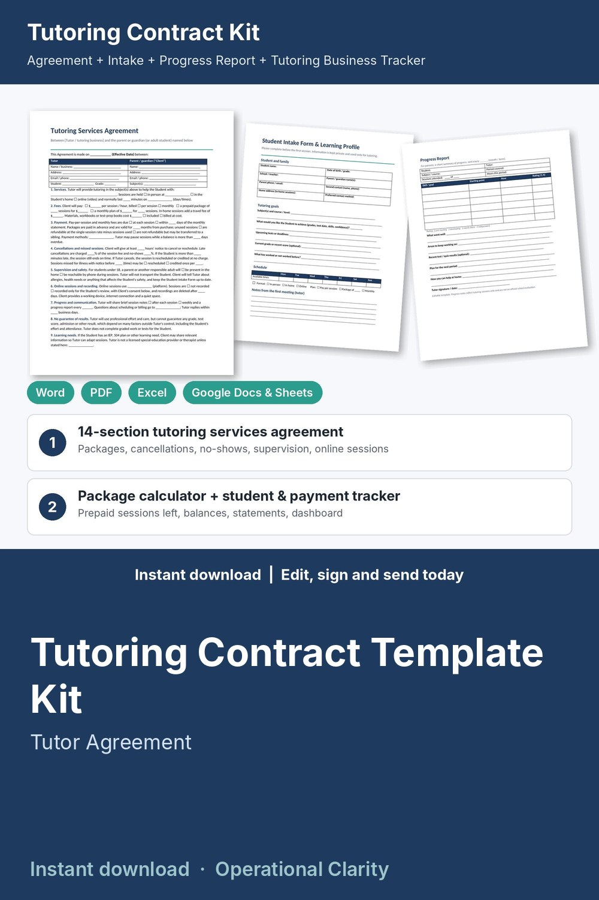

Tutoring Contract Template Kit

Enroll families, set clear cancellation rules, track prepaid packages and get paid: a complete tutoring contract kit with a working package calculator and student tracker, not just a Word file.
WHAT'S INSIDE
- Tutoring Services Agreement (Word + PDF): 14 plain-English sections, 2 pages. Services and session format (in person, in home, online), per-session / package / monthly fees, travel fee, payment and package expiry, refunds of unused sessions, cancellations, late cancel and no-show fees, late arrival, supervision of minors, online sessions and recording consent, progress and communication, no guarantee of grades or scores, learning needs, confidentiality, photos and materials, independent contractor, ending the agreement, liability, governing law, signatures.
- Student Intake Form & Learning Profile (Word + PDF): family contacts, goals, upcoming tests, weekly availability, plan, how the student learns best, learning needs, permissions, emergency contact.
- Session Notes & Progress Report (Word + PDF): monthly session log (topics, homework, attendance) and a progress report for parents with skill ratings.
- Tutoring Policies & Rate Sheet (Word + PDF): your packages and policies on one page for parents.
- Tutoring Business Tracker & Package Calculator (Excel / Google Sheets, 8 tabs):
* Rate Planner: your minimum hourly rate from income goal, expenses, taxes and hours
* Package Pricing: 4 / 8 / 12 / 20-session packages with discounts, per-session price and parent savings, plus an in-home travel fee calculator
* Students: plan, rate, sessions held, hours, charges, payments, balance due or prepaid credit, prepaid sessions left, alerts (BALANCE DUE / RENEW PACKAGE)
* Session Log: attended, late cancel, no-show, cancelled with notice, tutor cancelled; the charge follows your policy
* Payments and package purchases
* Printable Monthly Statement for each family: sessions, charges, payments and balance
* Dashboard: earned, collected, balances due, prepaid credit, hours taught, late cancels and fees, earnings by subject, month-by-month chart
- START HERE guide (PDF)
HOW IT WORKS
1. Set your rate and cancellation fees on Settings and price your packages.
2. Send new families the Intake Form, Policies & Rate Sheet and Agreement; collect signatures.
3. Log each session and payment; the tracker shows who owes and whose package is running out.
4. Keep session notes, send a progress report and print a monthly statement for each family.
Example data (6 sample students) shows how it all connects; delete it and type your own. Yellow cells = type here, green cells = calculated.
FORMATS
- Word .docx (edit in Microsoft Word, Google Docs, Pages or LibreOffice) + PDF, US Letter
- Excel .xlsx (works in Excel and Google Sheets)
This is an instant digital download, no physical item will be shipped.
Editable template, not legal advice. Laws differ by state and country; have it reviewed by a local attorney before you use it. The intake form is information only, not a medical or educational assessment.